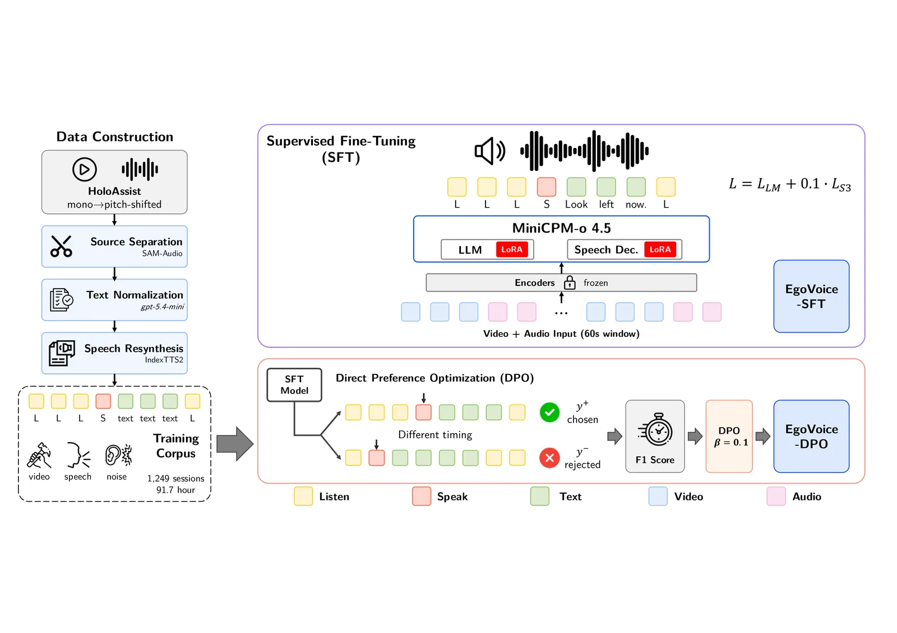
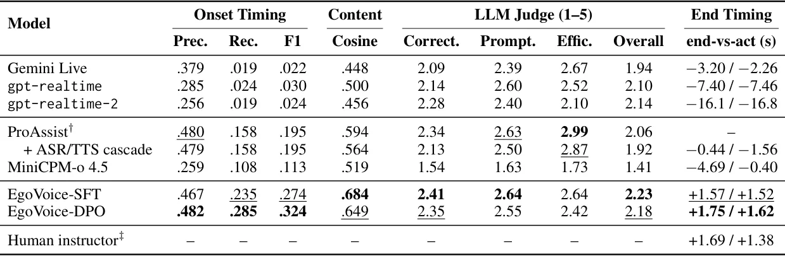
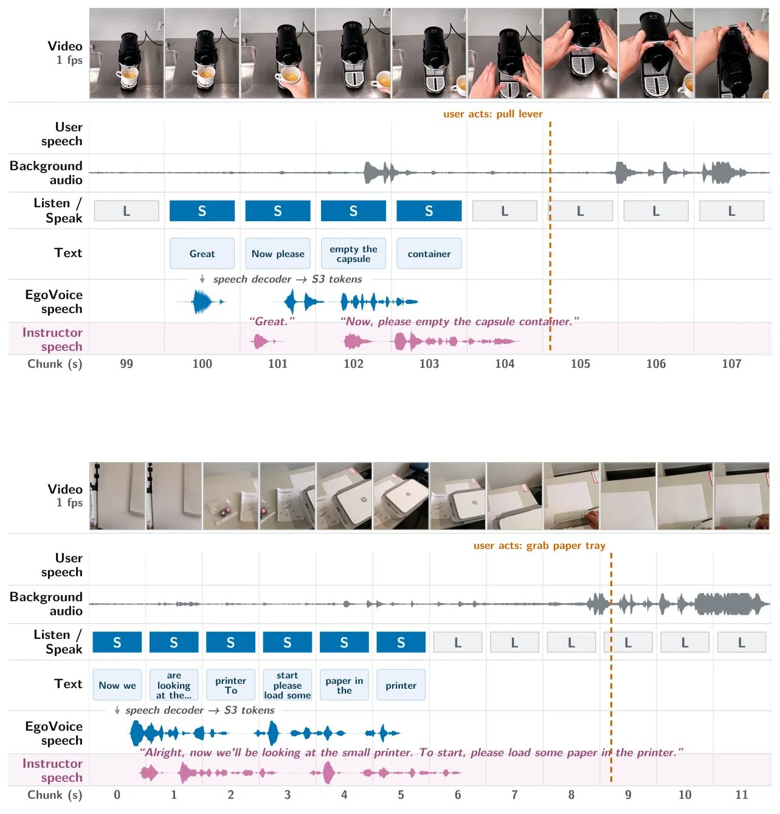

O problema: assistentes que só respondem quando chamados
Assistentes de voz como Alexa, Siri ou Google Assistant funcionam num modelo reativo: você faz uma pergunta, o sistema responde. Esse desenho funciona bem para consultas pontuais, mas falha quando você está com as mãos ocupadas montando um móvel, seguindo uma receita ou consertando algo. Nesses momentos, você pode não perceber que está prestes a errar, pode estar ocupado demais para parar e pedir ajuda, ou simplesmente não sabe que precisa de orientação.
O EgoVoice ataca esse problema. A ideia é treinar um modelo multimodal que recebe vídeo e áudio contínuos de uma câmera em primeira pessoa — como a de óculos de realidade aumentada — e decide por conta própria se deve permanecer em silêncio ou intervir com uma dica falada. O sistema precisa resolver três desafios ao mesmo tempo: processar vídeo, áudio e fala em tempo real; escutar e falar simultaneamente, sem esperar turnos explícitos; e decidir quando vale a pena interromper o usuário.
Apesar do avanço recente em modelos multimodais com saída de fala (como o GPT-4o e o Gemini Live) e em sistemas de diálogo full-duplex, nenhum trabalho anterior combinou essas três capacidades num único modelo treinado para assistência proativa a partir de streams egocêntricos contínuos. O EgoVoice preenche essa lacuna.

Por que não basta sintetizar fala a partir de texto
Uma abordagem natural seria pegar um dataset de vídeo com instruções textuais anotadas — como os usados em benchmarks de assistência proativa baseada em texto — e simplesmente converter essas instruções em fala com um sistema text-to-speech (TTS). O problema é que texto e fala têm timelines incompatíveis.
Instruções textuais são anotadas assumindo que o usuário as vê instantaneamente. Mas fala leva tempo para ser reproduzida. Se você sintetizar a frase 'use o parafuso mais curto' e colocá-la no mesmo timestamp da anotação textual, o usuário já estará agindo antes de ouvir o final da frase. Se você antecipar a síntese para compensar, corre o risco de colidir com outras instruções ou de falar durante uma ação não relacionada.
Além disso, sintetizar a partir de texto não captura os sons ambientes que acompanham tarefas físicas reais: barulho de ferramentas, objetos caindo, passos. Esses sons fazem parte do contexto que o modelo precisa aprender a processar.
Por isso, os autores partiram do HoloAssist, um corpus de vídeos egocêntricos em que um usuário executa tarefas físicas enquanto recebe orientação falada de um instrutor humano ao vivo. As intervenções já estão naturalmente alinhadas com o comportamento do usuário, e os sons de fundo estão preservados. Mas os áudios brutos não servem diretamente para treinar um modelo.
Construindo dados limpos a partir de gravações reais
As gravações do HoloAssist misturam num único canal a fala do usuário, a fala do instrutor e sons ambientes. Além disso, as vozes foram anonimizadas com pitch shifting, o que as torna artificiais e inadequadas para treinar um modelo de interação natural.
O pipeline de processamento funciona em duas etapas. Primeiro, os autores separam o áudio de fundo da mistura usando SAM-Audio, um modelo de separação de fontes guiado por prompt. Eles isolam as vozes humanas e retêm o resíduo como canal de background. Em seguida, aplicam Silero VAD para verificar que nenhuma voz residual permaneceu no canal de fundo; sessões onde ainda há atividade vocal são descartadas.
Segundo, eles ressintetizam a fala do usuário e do instrutor. As transcrições originais do HoloAssist contêm erros de ortografia, pontuação inconsistente e disfluências, que são normalizadas com GPT-4-mini. Comentários irrelevantes no início e fim das sessões (9% das falas) são removidos. Cada fala é ressintetizada com IndexTTS2, um sistema de TTS adaptativo, usando falantes de referência amostrados do Multilingual LibriSpeech (2.498 falantes para treino, 340 disjuntos para avaliação).
Cada frase é sintetizada várias vezes. Candidatos cuja duração excede a original são descartados, para preservar o timing. O candidato cuja transcrição ASR (verificada com Qwen3-ASR-1.7B) corresponde exatamente ao texto original é selecionado. Sessões contendo qualquer fala mal pronunciada são descartadas.
No final, o processo gera três canais de áudio sincronizados: fala do usuário, fala do instrutor e sons de fundo. Isso permite treinar o modelo para escutar o usuário e o ambiente enquanto decide se deve falar.
Como o modelo decide quando falar
O EgoVoice é construído sobre o MiniCPM-o 4.5, um modelo de linguagem multimodal de 9 bilhões de parâmetros que suporta interação full-duplex: ele pode escutar e falar ao mesmo tempo, sem esperar turnos explícitos. O modelo processa vídeo e áudio em chunks de um segundo e, a cada chunk, decide se permanece em silêncio ou gera uma intervenção falada.
O treinamento tem duas fases. Na primeira, supervised fine-tuning (SFT), o modelo aprende a imitar o comportamento do instrutor humano. Os autores aplicam LoRA (rank 32, alpha 64) tanto no backbone LLM quanto no decodificador de tokens de fala, treinando por 5 épocas com learning rate de 2e-4 e batch size de 32. Essa fase produz o EgoVoice-SFT.
Na segunda fase, direct preference optimization (DPO), o modelo é refinado para melhorar o timing das intervenções. O DPO é uma técnica de alinhamento que ajusta o modelo usando pares de exemplos preferidos e rejeitados, sem precisar de um modelo de recompensa separado. Aqui, os autores geram múltiplas versões de cada intervenção com diferentes timings e usam o DPO para ensinar o modelo a preferir intervenções que terminam antes da ação do usuário.
O EgoVoice-DPO treina por 1 época com beta=0.1, learning rate de 5e-6 e batch size de 16. O checkpoint é selecionado com base em performance de validação. A granularidade temporal do modelo é herdada do MiniCPM-o 4.5: um segundo por chunk.

Como avaliar um assistente proativo
Avaliar assistência proativa é mais complexo que avaliar um chatbot reativo. Não basta medir a qualidade do texto gerado; é preciso saber se o modelo falou no momento certo, se o conteúdo é relevante e se a ajuda é útil no contexto da tarefa.
Os autores propõem três eixos de avaliação. Primeiro, timing de intervenção: o modelo deve falar perto do momento em que o instrutor humano falou. Isso é medido com precision, recall e F1 sobre chunks de um segundo. Uma intervenção é considerada correta se começa dentro de uma janela de tolerância (T segundos) ao redor do onset do instrutor. Nos experimentos principais, T=5 segundos.
Segundo, relevância de conteúdo: a fala gerada deve ser semanticamente próxima da fala do instrutor. Isso é medido com similaridade de cosseno entre embeddings SBERT das transcrições. Terceiro, qualidade geral da assistência: um LLM judge (GPT-4o) avalia cada intervenção em quatro dimensões — correção, proatividade, eficiência e overall — numa escala de 1 a 5, comparando a saída do modelo com a do instrutor humano.
Além disso, os autores medem end timing: quanto tempo antes (ou depois) da ação do usuário a fala termina. Valores positivos indicam que o modelo terminou de falar antes do usuário agir, o que é desejável. Esse número é reportado apenas para intervenções ligadas a ações específicas (subset action-linked).
Finalmente, um subconjunto de 50 sessões é avaliado por humanos, que comparam pares de saídas e escolhem qual assistência preferem. Isso valida se as melhorias automáticas refletem preferência real.
Baselines: APIs comerciais e modelos open-source
Os autores comparam o EgoVoice contra seis baselines. Três são APIs comerciais: Gemini Live (gemini-live-2.5-flash-native-audio) e duas versões da OpenAI Realtime API (gpt-realtime e gpt-realtime-2). Todas aceitam vídeo e áudio streaming e produzem fala. Como essas APIs dependem de detecção de atividade vocal e raramente respondem sem fala ativa do usuário, os autores removem o áudio de fundo para evitar acionamentos falsos — uma condição de avaliação mais favorável.
O baseline de texto de referência é o ProAssist (8B), o trabalho mais próximo do EgoVoice. Ele usa os mesmos dados do HoloAssist e o mesmo protocolo de avaliação, mas produz texto em vez de fala. O ProAssist recebe vídeo streaming e transcrições ground-truth da fala do usuário nos timestamps originais, além de uma pergunta neutra de abertura para sessões onde o usuário nunca fala.
Dois baselines open-source suportam interação por voz. O primeiro é uma cascata: ProAssist + Qwen3-ASR para transcrever a fala do usuário + IndexTTS2 para sintetizar a fala do assistente. Os autores assumem latência zero entre os três componentes, de modo que cada fala começa a tocar no chunk onde o ProAssist a gera, e só a duração da síntese afeta quando ela termina.
O segundo baseline open-source é o MiniCPM-o 4.5 (9B) em configuração zero-shot, que também serve como backbone do EgoVoice antes do fine-tuning.

Resultados: modelos comerciais falham, EgoVoice melhora em todas as métricas
As APIs comerciais têm desempenho muito fraco. Gemini Live, gpt-realtime e gpt-realtime-2 alcançam F1 de no máximo 0.03 em onset timing. Eles dependem de detecção de atividade vocal e raramente intervêm proativamente. Quando intervêm, o conteúdo é genérico e pouco útil: scores de LLM judge entre 1.94 e 2.14 (numa escala de 1 a 5), bem abaixo do ProAssist (2.06) e do EgoVoice.
O ProAssist, baseline de texto, atinge F1 de 0.195 e cosine similarity de 0.594. A cascata ProAssist + ASR/TTS mantém o mesmo F1 (0.195) e cosine similar (0.564), mas os scores de LLM judge caem ligeiramente (de 2.06 para 1.92), sugerindo que a conversão para fala introduz pequenas perdas de qualidade.
O MiniCPM-o 4.5 zero-shot tem F1 de apenas 0.113 e cosine de 0.519. Ele intervém raramente e, quando fala, o conteúdo é menos relevante. Os scores de LLM judge são os mais baixos de todos (1.41 overall).
O EgoVoice-SFT melhora drasticamente: F1 de 0.274 (recall de 0.235), cosine de 0.684 e scores de LLM judge entre 2.23 e 2.64. Isso mostra que o fine-tuning supervisionado ensina o modelo a intervir com mais frequência, no momento mais próximo do instrutor, e com conteúdo mais relevante.
O EgoVoice-DPO refina ainda mais o timing: F1 sobe para 0.324 (recall de 0.285), o melhor resultado entre todos os modelos. O cosine cai ligeiramente para 0.649, e os scores de LLM judge caem um pouco (2.18 overall), indicando que o DPO melhora timing à custa de uma leve queda na qualidade do conteúdo. Ainda assim, EgoVoice-DPO supera todos os baselines.
Avaliação humana confirma preferência pelo EgoVoice
Em 50 sessões avaliadas por humanos, o EgoVoice-DPO é preferido em 64% das comparações contra o MiniCPM-o 4.5 zero-shot, e em 58% contra o ProAssist em cascata. A diferença é estatisticamente significativa (p < 0.01 em ambos os casos, teste de Wilcoxon).
Avaliadores reportam que o EgoVoice intervém no momento certo, diz coisas relevantes e termina de falar antes do usuário agir. Em contraste, o MiniCPM-o zero-shot frequentemente permanece em silêncio ou fala tarde demais, e a cascata ProAssist + TTS às vezes gera intervenções corretas mas com timing impreciso devido à latência acumulada dos componentes.

Limitações: escopo dos dados, artefatos do backbone e avaliação offline
O dataset é construído a partir do HoloAssist, que cobre tarefas procedurais de montagem. A capacidade do modelo de generalizar para outros domínios — como culinária, navegação ao ar livre ou interação social — não está garantida. Além disso, há uma lacuna substancial entre o desempenho do modelo e o do instrutor humano, sugerindo que mais dados e treinamento em maior escala seriam necessários para aproximar-se do nível humano.
O MiniCPM-o 4.5, backbone do EgoVoice, ocasionalmente exibe respostas excessivamente longas, repetição severa e mudanças de idioma (geração de tokens em chinês ou caracteres especiais no meio de falas em inglês). Embora o fine-tuning reduza esses artefatos, eles ainda ocorrem porque o LoRA adapta apenas um subconjunto pequeno dos parâmetros. O modelo também herda a granularidade de um segundo por chunk, o que pode limitar a precisão do timing em cenários que exigem responsividade sub-segundo.
A avaliação é conduzida em sessões pré-gravadas: as ações do usuário já estão fixas, então todos os modelos são avaliados contra comportamento independente de seus próprios conselhos. Os números devem ser lidos como proxy de performance interativa, não como medida direta. O protocolo também não modela sobreposição entre os dois falantes: cada fala toca até o fim, então não cobre nem o usuário interrompendo o assistente nem o assistente cedendo no meio de uma frase. Lidar com barge-in em ambas as direções é necessário para deployment e fica para trabalho futuro.
O DPO melhora o timing de intervenção mas introduz leve queda na qualidade do conteúdo, indicando que o sinal de recompensa tem espaço para refinamento. Finalmente, implantar um assistente always-on em cenários reais levanta riscos de privacidade: gravação egocêntrica contínua pode capturar terceiros sem consentimento, e transmitir áudio e vídeo para servidores externos arrisca expor informações sensíveis. Mitigar esses riscos exigirá mecanismos de consentimento, processamento on-device e protocolos de redação de áudio.
O que fica
O EgoVoice é o primeiro framework a combinar percepção multimodal, diálogo full-duplex e decisão proativa de intervenção num único modelo treinado para assistência egocêntrica falada. Ele mostra que é possível ensinar um modelo a decidir quando falar e o que dizer a partir de streams contínuos de vídeo e áudio em primeira pessoa, e que refinar o timing de intervenção com DPO melhora a utilidade da assistência.
Os autores liberam dataset, código e modelos como contribuição open-source. Com o crescente investimento da indústria em AR e smart glasses, frameworks como o EgoVoice podem servir de base para a próxima geração de assistentes que não esperam você pedir ajuda — eles percebem quando você precisa e falam no momento certo.
O que fica
- EgoVoice treina um modelo que decide sozinho quando intervir com fala, observando vídeo e áudio em primeira pessoa, sem esperar que o usuário peça ajuda.
- Modelos comerciais (Gemini Live, GPT Realtime) falham em assistência proativa: F1 ≤ 0.03. EgoVoice-DPO atinge F1 de 0.324 e termina de falar antes da ação do usuário.
- O dataset é construído separando vozes e sons de fundo do HoloAssist e ressintetizando fala limpa, preservando timing natural das intervenções humanas.
- Limitações: escopo restrito a tarefas de montagem, avaliação offline, granularidade de 1 segundo e artefatos herdados do backbone MiniCPM-o 4.5.
Paper original: EgoVoice: Proactive Spoken Assistance from Egocentric Multimodal Streams
Comentários
Nenhum comentário ainda. Seja o primeiro.